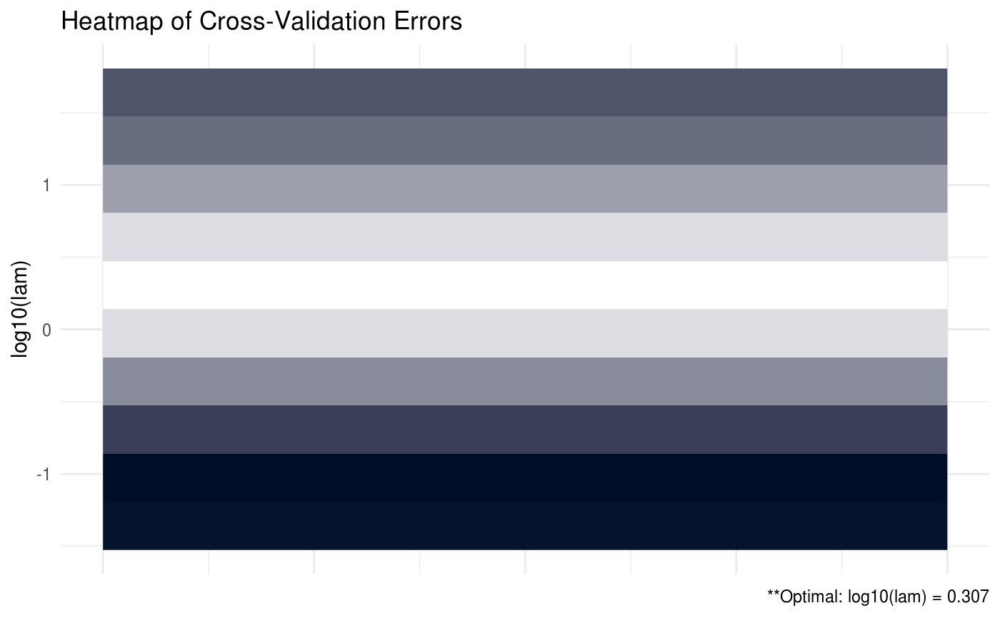

Produces a plot for the cross validation errors, if available.
# S3 method for shrink plot(x, type = c("line", "heatmap"), footnote = TRUE, ...)
| x | class object shrink. |
|---|---|
| type | produce either 'heatmap' or 'line' graph |
| footnote | option to print footnote of optimal values. Defaults to TRUE. |
| ... | additional arguments. |
# generate some data data = data_gen(n = 100, p = 5, r = 1) # lasso penalized beta (print estimated omega) (shrink = shrink(X = data$X, Y = data$Y, B = cov(data$X, data$Y), lam.max = max(abs(t(data$X) %*% data$Y))))#> #> Optimal tuning parameter on boundary...!#> #> Call: shrink(X = data$X, Y = data$Y, B = cov(data$X, data$Y), lam.max = max(abs(t(data$X) %*% #> data$Y))) #> #> Iterations: 33 #> #> Tuning parameters: #> log10(lam) lam #> [1,] -0.36 0.436 #> #> Log-likelihood: -128.73683 #> #> Omega: #> [,1] [,2] [,3] [,4] [,5] #> [1,] 1.62672 -1.03680 -0.11871 -0.07188 -0.06355 #> [2,] -1.03680 2.43747 -1.13686 0.16854 -0.25434 #> [3,] -0.11871 -1.13686 2.57937 -0.92485 -0.38020 #> [4,] -0.07188 0.16854 -0.92485 2.27985 -0.90611 #> [5,] -0.06355 -0.25434 -0.38020 -0.90611 1.85254# print estimated beta shrink$Z#> [,1] #> [1,] 0.21239346 #> [2,] 0.14949230 #> [3,] 0.00000000 #> [4,] 0.00000000 #> [5,] 0.04306576# create heatmap of CV errors plot(shrink, type = 'heatmap')# create line graph of CV errors plot(shrink)